Primeros pasos
Cómo se mueven las piezas, el mate, qué es un plan.
29 lecciones, gratis
 Coach de ajedrez con IA
Coach de ajedrez con IA
Juega una partida y descubre qué falló de verdad. El motor que llevas en el bolsillo hace el cálculo. Un coach con IA lo convierte en una frase que puedes usar en la siguiente partida.
Empieza gratis. iPhone, iPad y Android. Sin anuncios.
Tomar en d5 abre la puerta a 6.Nxf7. Tu rey sale a rastras con la dama y el alfil blancos ya apuntándole.
Juega 5…Na5. Cuesta un peón y deja al rey en casa.
Cualquier móvil ejecuta un motor más fuerte que cualquier humano vivo. Te enseña la jugada y un número. Nunca te dice en qué te metiste, y un número no es una lección. Chess Coach mantiene el motor y añade lo que faltaba: una frase clara sobre la idea que se te escapó, escrita para tu nivel.
«Entramos en el final. Ahora la actividad del rey pesa más que el material: llévalo al centro antes de empujar nada.»
Un comentario real, de un repaso real
Termina una partida y Chess Coach la pasa por el motor que llevas en el móvil, marca las jugadas que te costaron algo y las comenta una a una según avanzas. Trae partidas de Lichess o pega cualquier PGN.
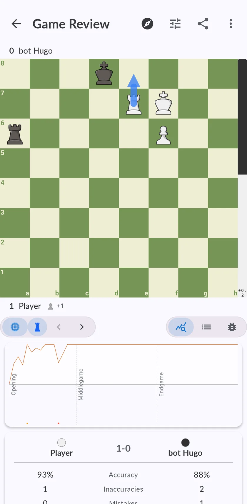
Precisión, errores y dónde giró la partida
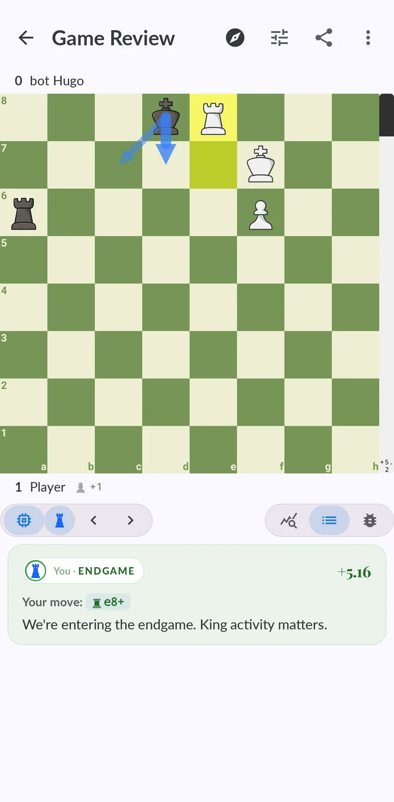
Un comentario en cada jugada que recorres
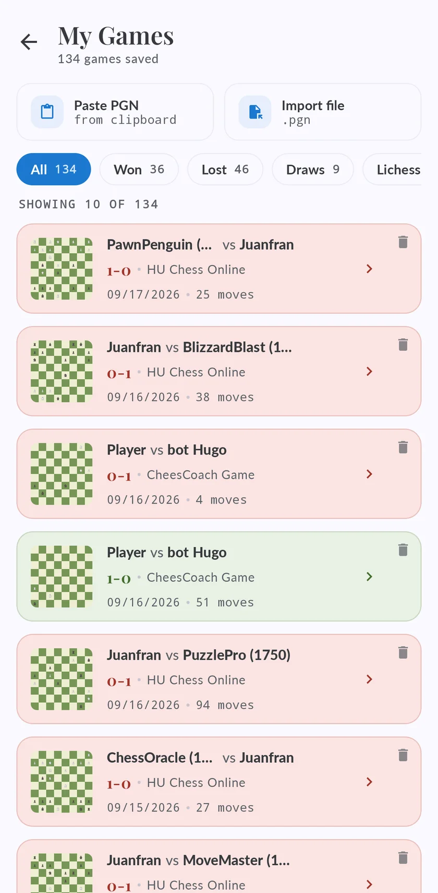
Tus partidas, más todo lo que importes
No es un montón de ejercicios. Tres laboratorios, uno por cada fase de la partida, y todos con la misma forma: primero aprendes la idea y después la juegas contra un rival que te castiga si la haces mal. Y un cuarto para lo que necesitan los tres: el cálculo.
Los cuatro laboratorios son Premium. Para probar, gratis: la Italiana en el entrenador de aperturas, el primer ejercicio de medio juego y las diez primeras posiciones de cada set de cálculo.
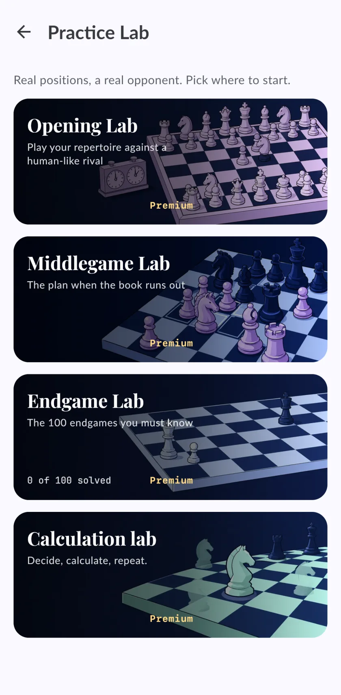
I — La apertura
Elige las aperturas que juegas de verdad. El entrenador repasa las jugadas con repetición espaciada y te avisa cuando una línea toca repasarla. Después juegas esa misma línea contra Maia, una red entrenada con partidas reales de club, que se equivoca como se equivocan las personas.
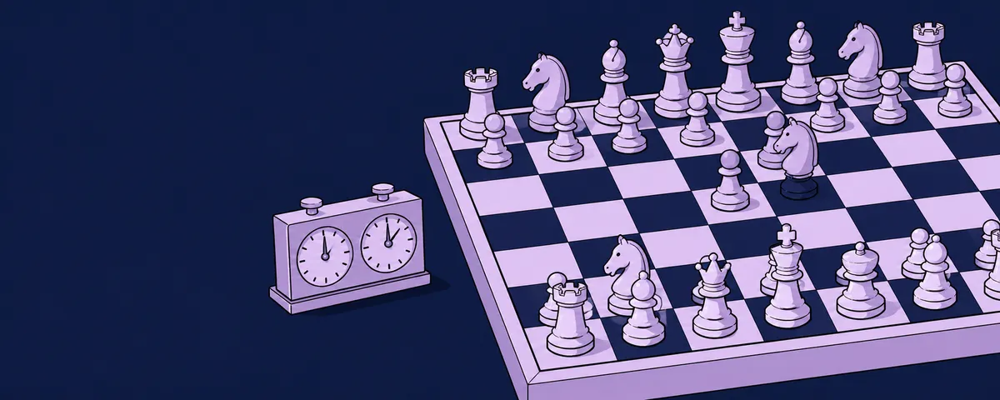
Las jugadas de tu repertorio, repasadas hasta que dejas de pensarlas.
Repetición espaciada, tres estrellas por líneaJuega la línea de verdad contra un rival que se mueve como un jugador de club.
Redes Maia por nivel
Tu repertorio, por color

Juega la jugada, no la teoría
II — El medio juego
Jugada quince, se acabó la teoría y nadie te enseñó qué hacer después. El Laboratorio de medio juego va por estructuras de peones: la Carlsbad, la Benoni, la cadena francesa y veintidós más, cada una con su teoría, el plan de cada bando y posiciones de partidas reales donde nombras la estructura y luego llevas el plan a cabo.
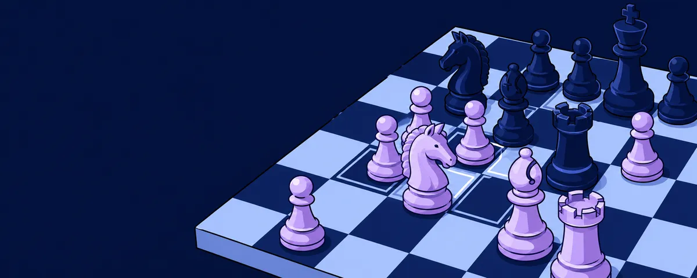
Cada estructura con su teoría, los planes de cada bando y una pregunta para comprobar que la has leído bien.
25 estructurasNombra la estructura, di hacia dónde va la partida y después ejecuta el plan con un presupuesto de jugadas.
1000 posiciones
Apréndela y después juégala

Benko, Benoni, Carlsbad, cadena francesa
III — El final
Posición a posición: el objetivo, la técnica en cuatro líneas y después la juegas contra un motor a plena fuerza que no se despista. Unos hay que ganarlos y otros solo aguantarlos. El modo guiado te avisa en cuanto una jugada tira el resultado.
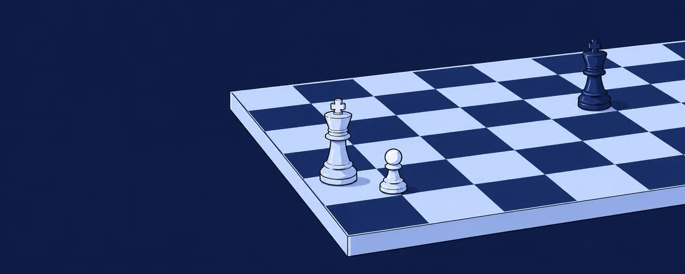
Rey y peones, torres, damas, alfiles y caballos; cada familia en orden de dificultad.
100 finalesUna posición nueva cada vez, sacada de partidas reales. Unas se ganan, otras se aguantan.
45 000+ ejercicios
Cinco familias, veinticinco resueltos

El objetivo y después la técnica en cuatro pasos
En las tres — El cálculo
Apertura, medio juego o final: toda partida acaba en una posición donde hay que sacar la jugada. El Laboratorio de cálculo lo entrena de dos formas: decisiones que lees, calculas y después juegas, y ejercicios rápidos que vuelven una y otra vez hasta que ves la respuesta sin pensarla.
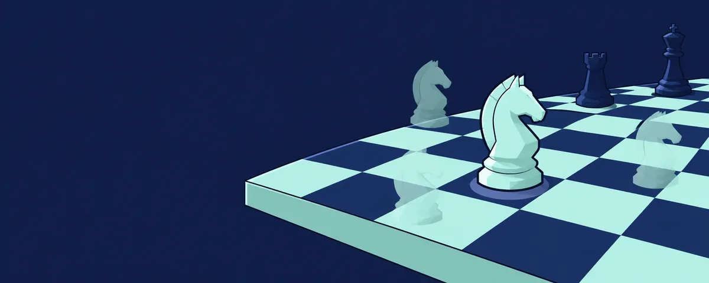
Lee la posición, calcula y decide. Después juega tu línea y comprueba si aguanta.
149 ejercicios, por temáticaEl método del pájaro carpintero: cuatro flechas y una es la mejor. El mismo set en siete ciclos, cuatro semanas, luego dos, una… hasta un solo día. Los fallos vuelven a repaso.
2 sets de 150 posiciones
Cuatro flechas. Solo una es la mejor.

Siete ciclos, de 28 días a uno
Una escalera de cursos guiados, 303 lecciones, cada una con su teoría, sus puzzles, una apertura que aprender y una partida contra un bot que tienes que ganar para seguir. El primer nivel enseña las reglas desde cero y es gratis.
Cómo se mueven las piezas, el mate, qué es un plan.
29 lecciones, gratisTáctica y las primeras aperturas que merece la pena saber.
44 lecciones, 0–1000Estrategia, estructuras y los finales que deciden partidas.
91 lecciones, 1000–1500Cálculo y planes largos.
139 lecciones, 1500–2000
Un camino, una lección cada vez
Veinte rivales con cara y nivel, desde un principiante que cuelga piezas hasta un gran maestro que no. Gente de verdad en línea. Puzzles cuando tienes tres minutos. Y un tablero para analizar lo que quieras.
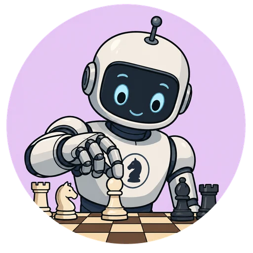
Cinco niveles, cuatro rivales cada uno. Fallan como dice el nivel de su ficha.
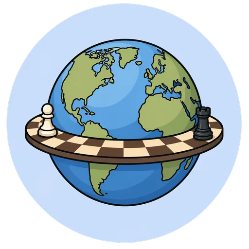
Ajedrez y Go en línea, con reloj, rating y clasificación mensual.
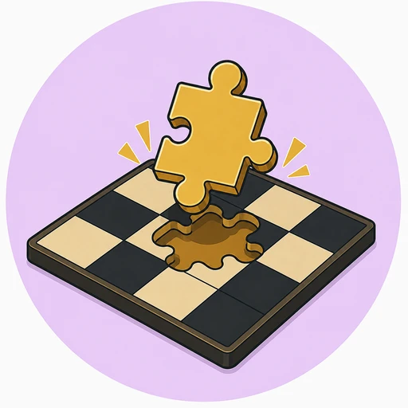
Uno diario, por temas, una racha que mantener y una tormenta de tres minutos.
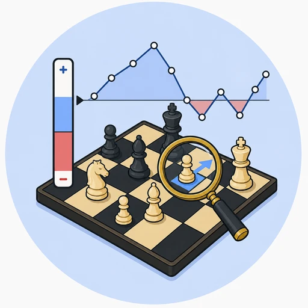
Monta cualquier posición, mira las líneas del motor y pregunta al coach qué significan.


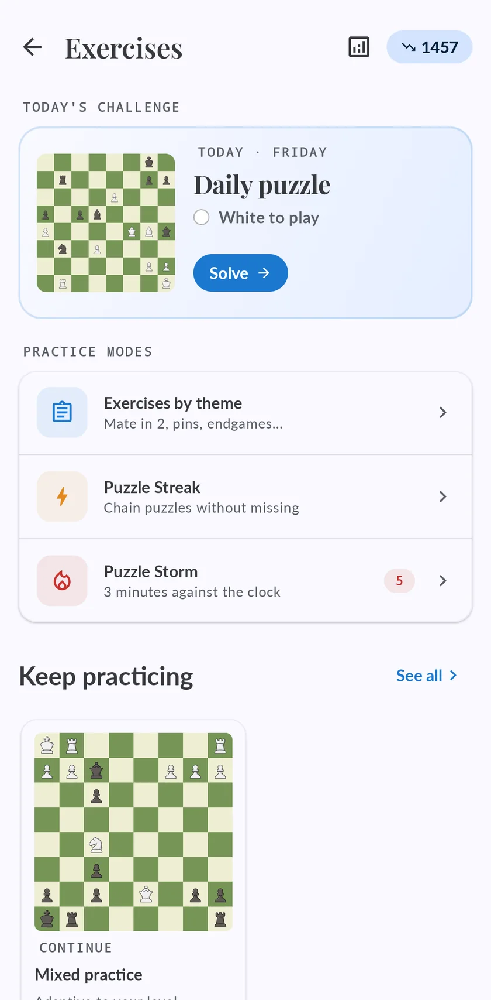
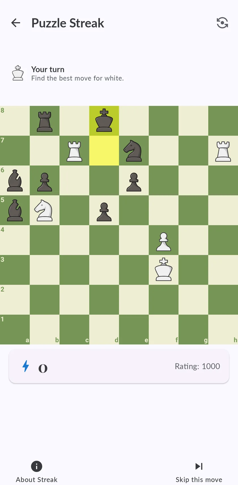
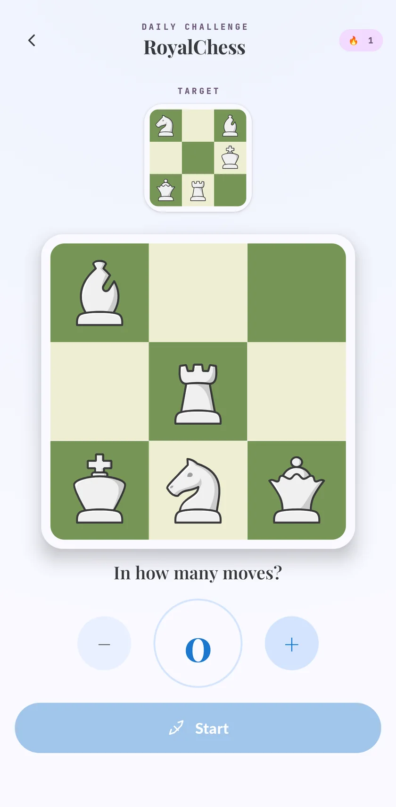
Juzgar una posición, jugar como una persona y caber dentro de un iPhone son problemas distintos. Corren en tu dispositivo, no en un servidor, así que el análisis funciona en el metro sin cobertura.
El que juzga
En Android corre en el móvil como proceso propio, con su evaluación neuronal. Es lo que marca tus errores graves, lo que dibuja la gráfica de evaluación y lo que encuentra la jugada que se te escapó; y es con lo que juegan los rivales más fuertes.
El del iPhone y el iPad
No es un capricho. Stockfish es GPLv3 e iOS no deja arrancar un proceso aparte, así que enlazarlo dentro de la app metería la app entera bajo esa licencia. Caissa hace el mismo trabajo con una licencia que sí le permite vivir ahí dentro, y analiza y juega en el dispositivo igual.
El que juega como una persona
No es un motor fuerte con el volumen bajado. Cada nivel es una red distinta entrenada con partidas reales de jugadores de esa fuerza, así que se equivoca donde se equivoca la gente y juega la jugada que elegiría de verdad un jugador de club de ese nivel. Es el rival del Laboratorio de aperturas.
Y uno más, por honestidad: por debajo de unos 1300 el Stockfish oficial ya no se puede debilitar más — su ajuste más flojo sigue jugando a unos 1320. Los rivales de principiante corren sobre Fairy-Stockfish, que sí puede, así que un bot etiquetado 800 pierde como pierde un 800 y no regalando una pieza al azar.
El motor corre en tu móvil. Las explicaciones vienen de un modelo de lenguaje, y tú eliges cómo pagarlas: créditos dentro de la app, o tu propia clave con uno de cinco proveedores, que te cobran ellos a precio de coste.
Compras un paquete y te olvidas. Empiezas con llamadas gratis, para oír cómo habla el coach antes de pagar nada.
Pegas una clave y la app habla directamente con ese proveedor. Repasar una partida entera cuesta una fracción de céntimo.
Las claves se cifran en el dispositivo y no salen de él salvo para llegar al proveedor que elegiste. Sin anuncios, sin rastreadores y sin vender las partidas de nadie.
Stockfish, Fairy-Stockfish y las redes Maia son GPL y corren en el dispositivo. Las fuentes y los binarios exactos están publicados.
Empieza gratis en iPhone, iPad o Android. Sin anuncios, y sin suscripción para jugar, analizar o hacer el primer curso.
Inicia sesión y tus partidas, ratings y progreso te siguen al otro dispositivo.

La portada, en un iPhone. La misma app en Android y en iPad.